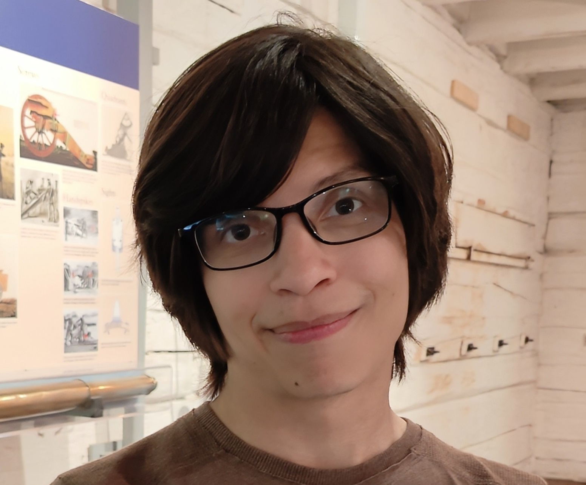
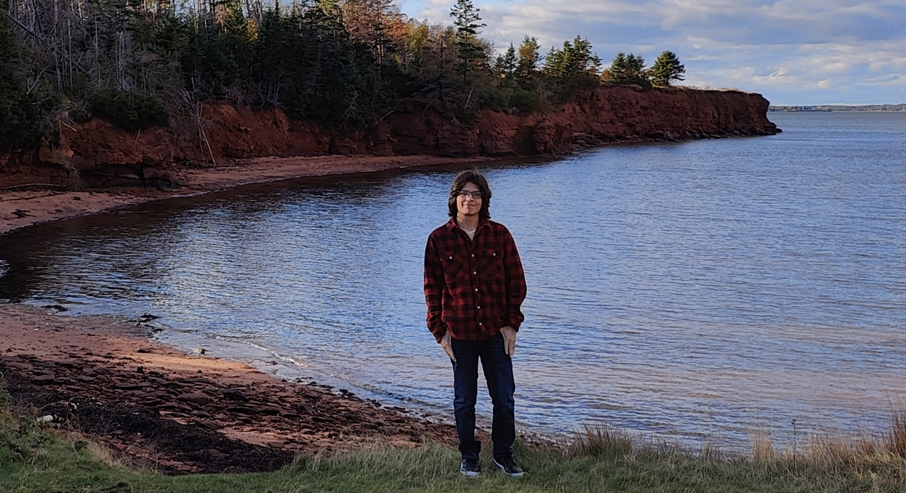

Hi, my name is Antonio.
I'm a student at the Centre of Geographic Sciences (COGS) in Lawrencetown, Nova Scotia and I'm hoping to start a career in geomatics.
I grew up in the always moving city of Toronto, surrounded by skycrapers and a sea of people and vehicles which sparked my fascination with urban life.
Now, I study geography and I'm hoping to start a career where I can explore my passion for public transportation development and analyzing people's movement in
urban environments.
I am currently pursuing a Geographic Information Systems (GIS) Graduate Certificate in order to to expand my knowledge and skills in geospatial analysis,
and am hopeful that one day I will be able to apply this knowledge in real-world applications. I am always looking for way to learn and grow when possible
in both professional or casual environments.
I'm excited to use my knowlege and expertise to develop solutions to problems in our world.
Why GIS?
I hold a degree in Geography from York University, which provided me with a solid foundation in understanding the complexities of spatial systems.
My passion for improving public transportation throughout the world inspires me in finding ways to work in creating cities
that prioritize accessibility and sustainability for everyone. In particular my career goal is to be able to assist in designing and expanding transit networks that connect
communities, reduce reliance on personal vehicles, and enhance the quality of urban life.
I have experience in a variety of fields, including urban geography, human geography, and Geographic Information Systems (GIS). My background
allows me to analyze spatial relationships and understand how human and landscapes interact with each other. I'm also developing skills in programming, database management,
remote sensing, and data analytics through my current college courses, which support my efforts to achieve my goals.
In my spare time, I'm usually listening to my favorite music or diving into video games. It's my go-to way to relax after a long day.